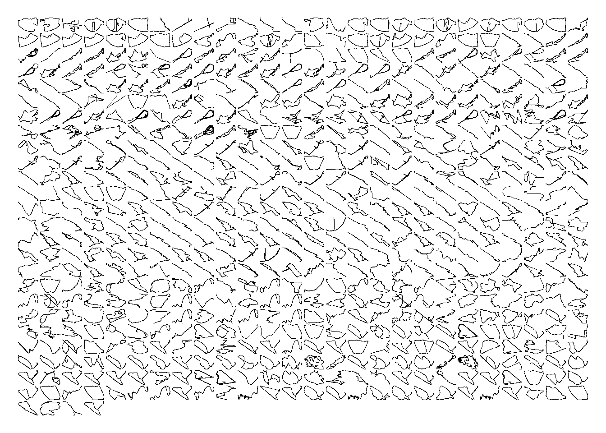
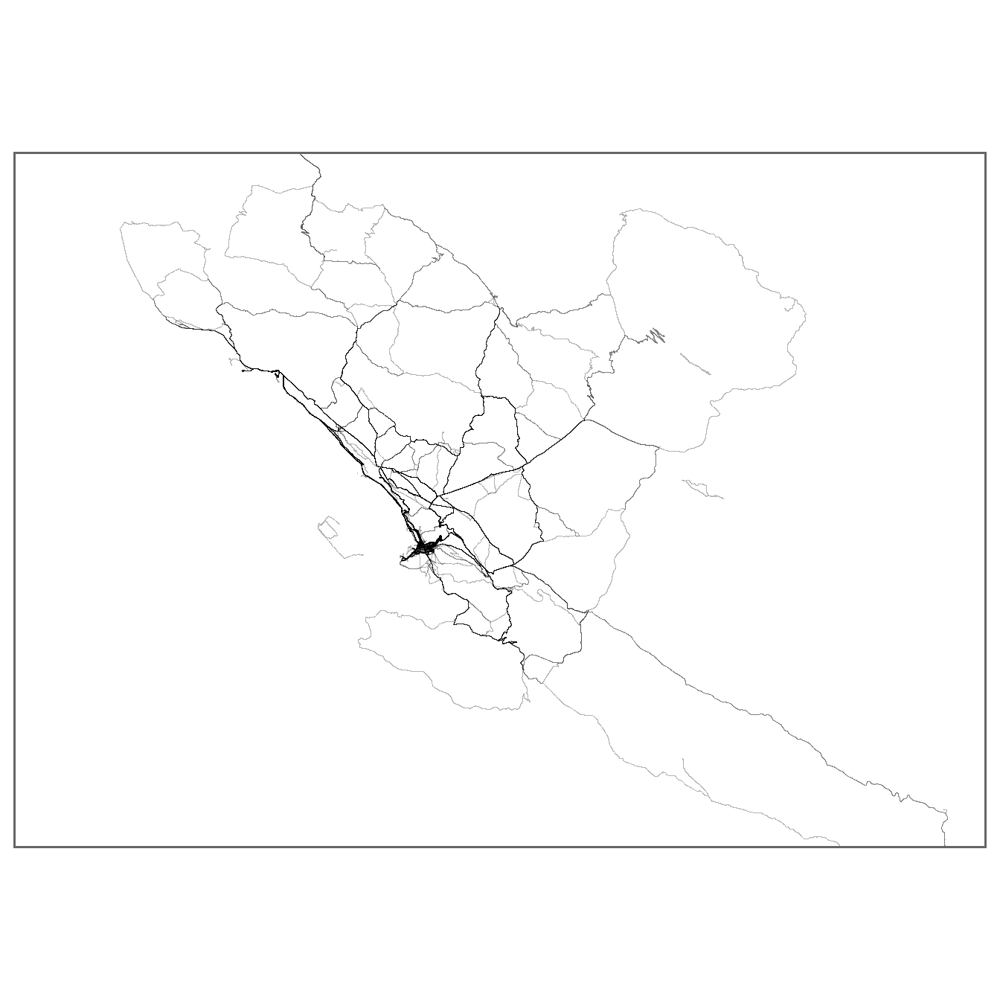
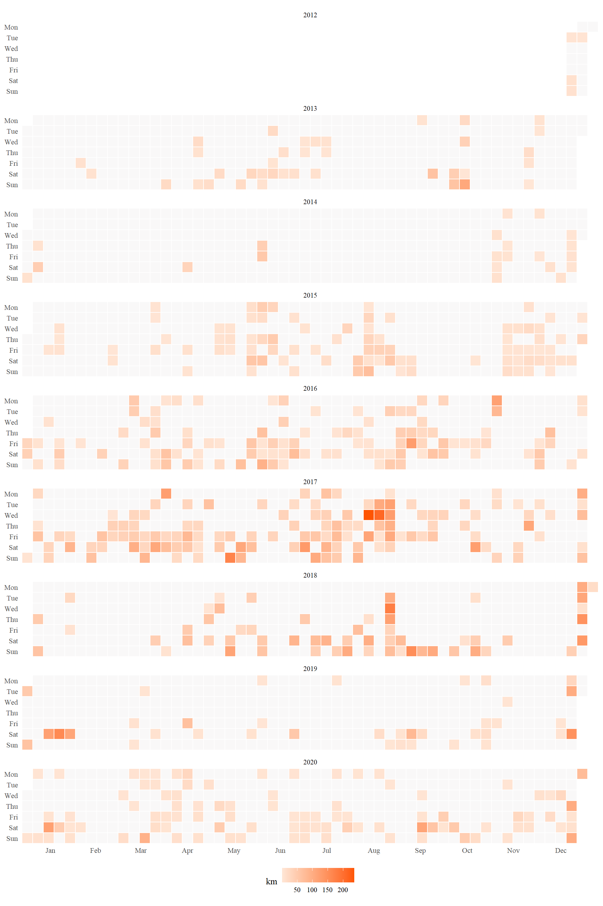
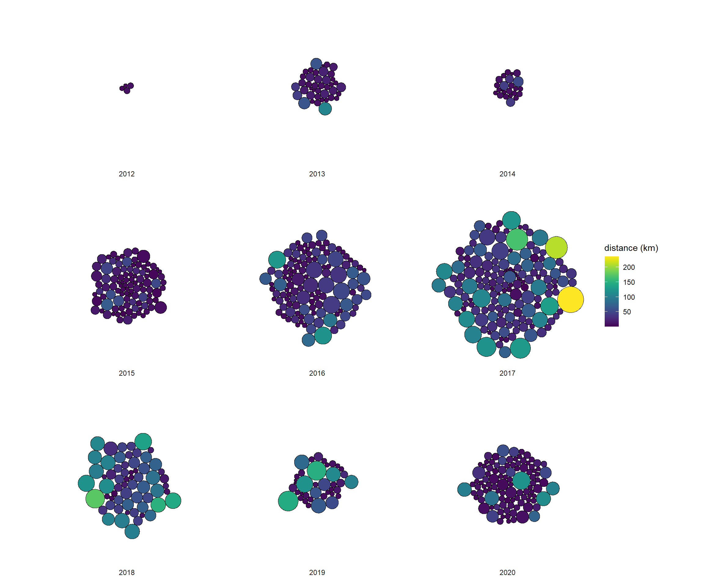

Strava is an internet service for tracking human exercise which incorporates social network features - it is sometimes referred to as “Facebook for cyclist”. Strava provides tools for analysing activities and relative performance - however there are no native Strava tools to visualise activities. However the Strava library for R provides flexible and user friendly tools to visualise activities using ggplot.
Process:
- Bulk export data from Strava using the Strava data exporter: link
- Covert exported data to gpx files with GPSBabel
- Import data into R and use the Strava library by Marcus Volz to visualise the data: link
The strava library makes visualizing and creating heatmaps of activities super simple. Howeer, it does require the activitiy files to be in gpx file format. This can cause some issues as the Strava bulk export can be in multiple file formats including .fit and .tcx depending on the make and model of the device that was used to record the activitiy.
Conversion of the files to the gpx file format is relatively straightforward; however at the time of writing the Strava output format for tcx files is not fully consistent with the file format specification. This issues is detailed in more detail here:link
GPSBabel is very well documented and has cross platform support; it can be downloaded from here:link
Details on using GPSBabel to batch covert a set of files in Windows can be found here:link
The first step is to load gpx activity files into Strava. This can be achieved by using the process_data() function from the strava package. The function converts the activity files into a single data frame which can then be easily plotted using ggplot.
library(strava) # loading the Strava package
library(patchwork) # for aligning the plots
data <- process_data(path) # loading the activities
Facets Plot
The facets plot is the first of the plots that can be easily created using the package. Each activity file is visualised individually with a trace outline of the route of each of the activities.
# Creating the plot
p1 <- plot_facets(data) +
theme(plot.margin = margin(0.5,0.5,0.5,0.5, "cm"))
# Saving the plot file as a png
# ggsave("facets001.png", p1, width = 10, height = 10, units = "cm", dpi=1200)
# Viewing the plot
p1

Heatmap Plot
Next, the plot_map function makes creating heatmaps super simple. As part of the plotting, option latitude and longitude coordinates can be defined. As the library uses standard ggplot functions, additional code can be included to add titles and to modify the plot margins.
# Defining our list of locations
loc <- list(dublin=c(-6.86, -6.00, 53.03, 53.46),
trieste=c(13.42, 14.28, 45.47, 45.9),
galway=c(-8.56, -9.78, 52.85, 53.46))
# Trieste
p2 <- plot_map(data, lon_min = loc$trieste[1], lon_max = loc$trieste[2],
lat_min = loc$trieste[3], lat_max = loc$trieste[4]) +
theme(plot.margin = margin(0.25,0.25,0.25,0.25, "cm")) +
theme(plot.title = element_text(color = "gray40", size = 16, face = "bold"),
plot.subtitle = element_text(color = "gray40", size=3)) +
theme(panel.border = element_rect(colour = "gray40", fill=NA, size=1))
#+ labs(title = "Trieste")
# Dublin
p3 <- plot_map(data, lon_min = loc$dublin[1], lon_max = loc$dublin[2],
lat_min = loc$dublin[3], lat_max = loc$dublin[4]) +
theme(plot.margin = margin(0.25,0.25,0.25,0.25, "cm")) +
theme(plot.title = element_text(color = "gray40", size = 16, face = "bold"),
plot.subtitle = element_text(color = "gray40", size=3)) +
theme(panel.border = element_rect(colour = "gray40", fill=NA, size=1))
# + labs(title = "Dublin")
# Galway
p4 <- plot_map(data, lon_min = loc$galway[1], lon_max = loc$galway[2],
lat_min = loc$galway[3], lat_max = loc$galway[4]) +
theme(plot.margin = margin(0.25,0.25,0.25,0.25, "cm")) +
theme(plot.title = element_text(color = "gray40", size = 16, face = "bold"),
plot.subtitle = element_text(color = "gray40", size=3)) +
theme(panel.border = element_rect(colour = "gray40", fill=NA, size=1))
# + labs(title = "Galway")
# Arranging the plots using the patchwork package
plot_merge <- (p2 / p3 / p4) # creates a merged stacked plot
# Saving the plot file as a png
# ggsave("map_merge.png", plot_merge)
# ggsave("map_trieste.png", p2) # individually saving the plot
# ggsave("map_dublin.png", p3) # individually saving the plot
# ggsave("map_galway.png", p4) # individually saving the plot
# Visualizing the plot
#p3
#p4
p2

Activity Timeline
Activities can also be visualised in a calendar format:
# Creating the timeline plot
p5 <- plot_calendar(data, unit = "distance")
# Saving the plot file as a png
# ggsave("calendar001.png", p5, width = 20, height=20, units="cm")
# Visualising the plot
p5

Ridges Plot
The ridges plot visualises activities by time across a seven day week:
# Creating the ridges plot
p6 <- plot_ridges(data)
# Saving the plot file as a png
# ggsave("ridges001.png", p6, width = 20, height = 20, units = "cm")
# Visualising the plot
p6

Packed Circles Plot
Finally the packed circles plot visualises activities by distance and year:
# Creating the packed circles plot
p7 <- plot_packed_circles(data)
# Saving the plot file as a png
# ggsave("packed_circles001.png", p7, width = 20, height = 20, units = "cm")
# Visualising the plot
p7
